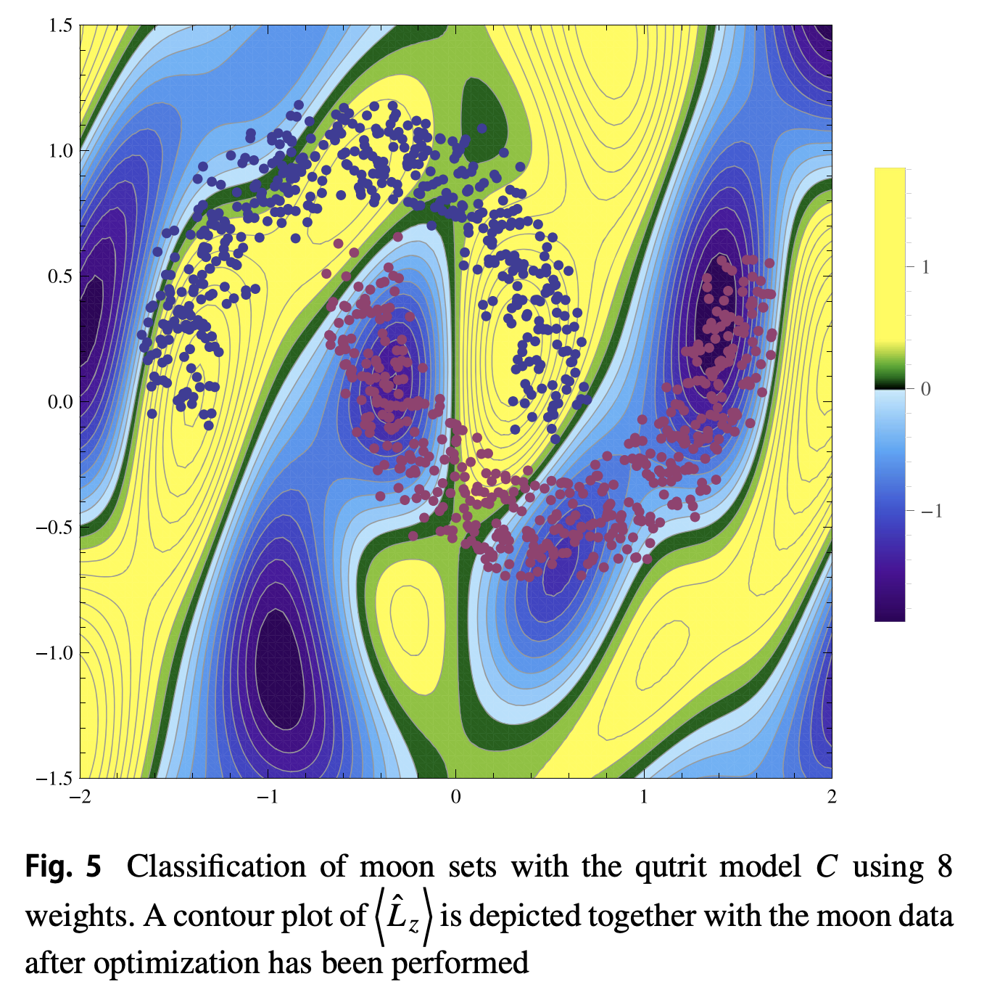
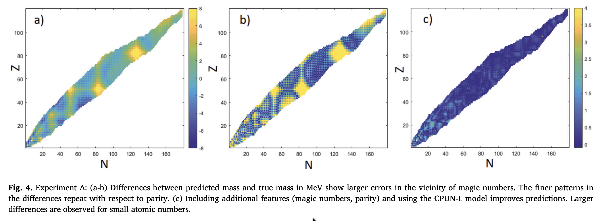
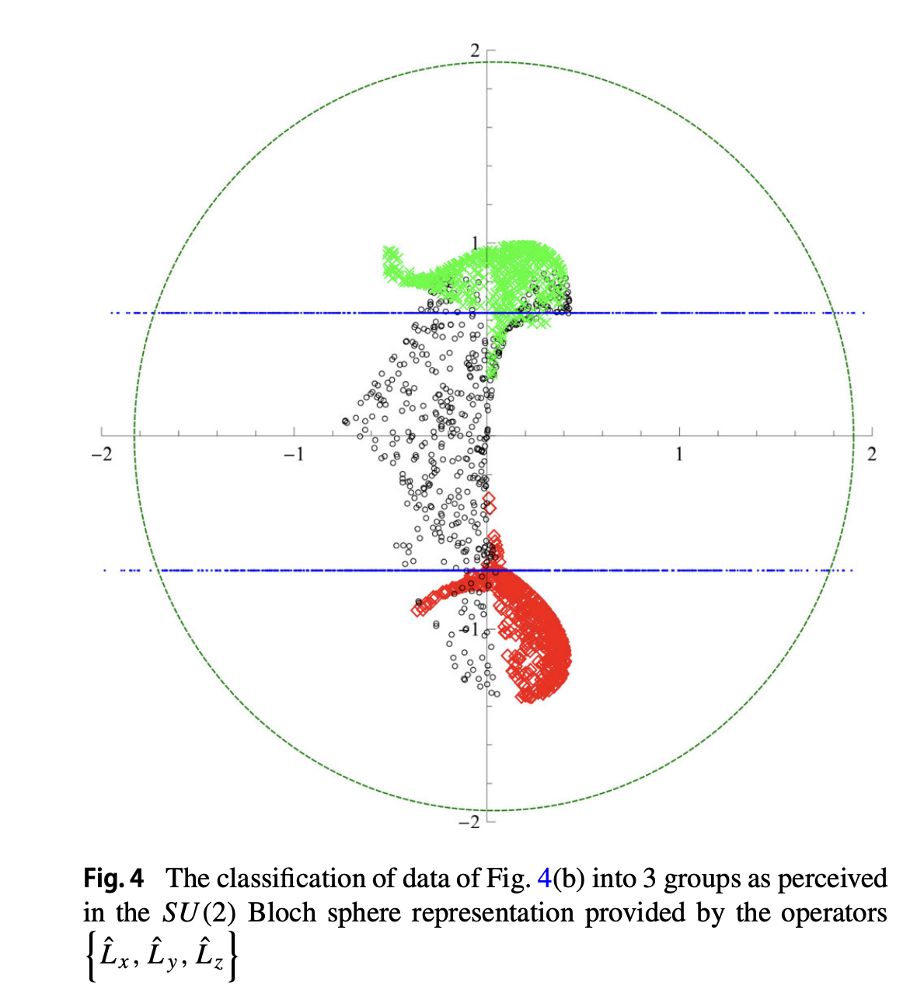
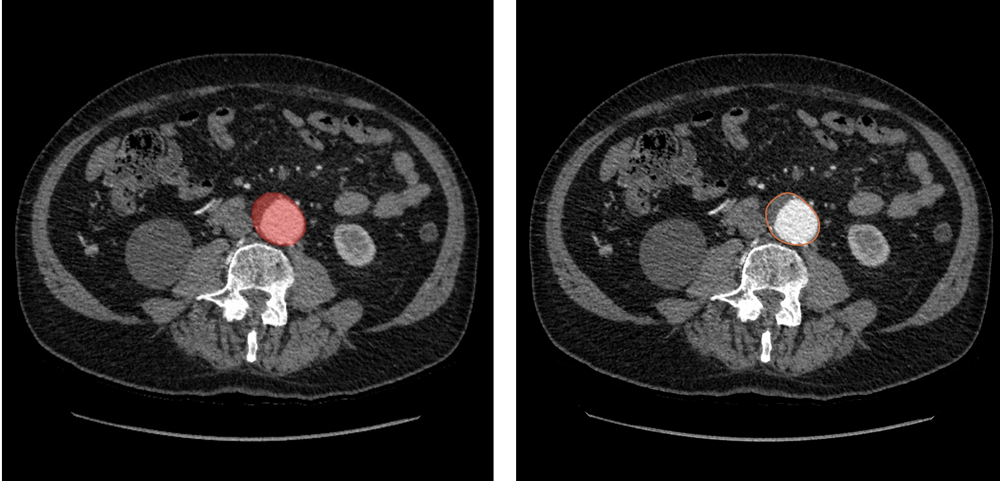

Segmentation and Diagnosis
Deep learning pipelines for anatomy-aware segmentation, MRI reconstruction, skin-lesion analysis, and biomedical datasets.
Hochschule Koblenz · RheinAhrCampus
We work on machine learning methods for medical imaging, computer vision, scientific modelling, and product-unit neural networks, connecting theoretical structure with practical systems.



Current work spans medical image analysis, complex-valued neural networks, product units, scientific AI, and robust vision systems.

Deep learning pipelines for anatomy-aware segmentation, MRI reconstruction, skin-lesion analysis, and biomedical datasets.
Neural architectures that combine additive and multiplicative structure for extrapolation, physical modelling, and shape tasks.
Machine learning for concentration fields, nuclear masses, nonlinear classification, and interpretable scientific systems.
The group is led by Prof. Dr. Babette Dellen and Prof. Dr. Uwe Jaekel, with research activity across computer vision, computational intelligence, medical technology, and mathematical modelling.
Student researchers include Osamah Sufyan, Martin Brückmann, and Ziyuan Li. Osamah's CV, background, and webpage material are now available from the Team page.